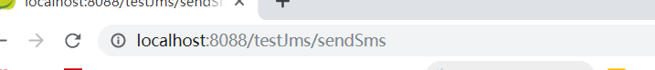
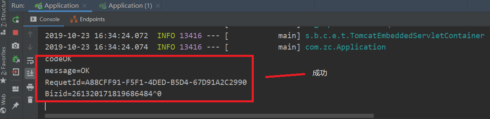

主要分为两步：1、创建发消息 2、创建收消息
1.创建发消息
1.1 创建maven工程
1.2 pom.xml文件导入依赖
注意：aliyun的包有时候idea不会自动下载，需要自行下载。
<modelVersion>4.0.0</modelVersion>
<groupId>com.zc</groupId>
<artifactId>launchCode</artifactId>
<version>1.0-SNAPSHOT</version>
//idea自动生成
//依赖
<parent>
<groupId>org.springframework.boot</groupId>
<artifactId>spring-boot-starter-parent</artifactId>
<version>1.4.0.RELEASE</version>
</parent>
<properties>
<java.version>1.8</java.version>
</properties>
<dependencies>
<dependency>
<groupId>org.springframework.boot</groupId>
<artifactId>spring-boot-starter-web</artifactId>
</dependency>
<dependency>
<groupId>org.springframework.boot</groupId>
<artifactId>spring-boot-starter-activemq</artifactId>
</dependency>
</dependencies>
1.3 在src/main/resources下创建application.properties文件
server.port=8088 //端口号
spring.activemq.broker-url=tcp://172.25.1.110:61616 //ip是中间件ip
1.4 创建启动类
/**启动类*/
@SpringBootApplication
public class Application {
public static void main(String[] args) {
SpringApplication.run(Application.class,args);
}
}
1.5创建测试类
@RestController
@RequestMapping("/testJms")
public class TestJms {
@Autowired
private JmsMessagingTemplate jmsMessagingTemplate;
@RequestMapping("/sendSms")
public void sendSms(){
Map map = new HashMap();
//手机号码
map.put("mobile","13598609053");
//模板编号
map.put("template_code","SMS_175573224");
//签名
map.put("sign_name","在线音乐网站");
//短信内容
map.put("param","{\"code\":\"666666\"}");
//将相关的短信信息存入消息中间件sms中
jmsMessagingTemplate.convertAndSend("sms",map);
}
2.创建收消息
2.1创建maven工程
2.2 pom.xml文件导入依赖
<modelVersion>4.0.0</modelVersion>
<groupId>com.zc</groupId>
<artifactId>adoptCode</artifactId>
<version>1.0-SNAPSHOT</version>
//上面一段一般idea自动生成 内容为创建maven时写的
<parent>
<groupId>org.springframework.boot</groupId>
<artifactId>spring-boot-starter-parent</artifactId>
<version>1.4.0.RELEASE</version>
</parent>
<properties>
<java.version>1.8</java.version>
</properties>
<dependencies>
<dependency>
<groupId>org.springframework.boot</groupId>
<artifactId>spring-boot-starter-web</artifactId>
</dependency>
<dependency>
<groupId>org.springframework.boot</groupId>
<artifactId>spring-boot-starter-activemq</artifactId>
</dependency>
<dependency>
<groupId>com.aliyun</groupId>
<artifactId>aliyun-java-sdk-dysmsapi</artifactId>
<version>1.0.0-SNAPSHOT</version>
</dependency>
<dependency>
<groupId>com.aliyun</groupId>
<artifactId>aliyun-java-sdk-core</artifactId>
<version>3.2.5</version>
</dependency>
</dependencies>
2.3 在src/main/resources下创建application.properties文件
server.port=9003
spring.activemq.broker-url=tcp://172.25.1.110:61616 //中间的id
#阿里AK
accessKeyId= 子账户账号
accessKeySecret=子账户的密码
2.4 创建启动类
package com.zc;
import org.springframework.boot.SpringApplication;
import org.springframework.boot.autoconfigure.SpringBootApplication;
@SpringBootApplication
public class Application {
public static void main(String[] args) {
SpringApplication.run(Application.class,args);
}
}
2.5在src/main/java创建listener包和测试类
package com.zc.listener;
import com.aliyuncs.dysmsapi.model.v20170525.SendSmsResponse;
import com.aliyuncs.exceptions.ClientException;
import com.zc.util.SmsUtil;
import org.springframework.beans.factory.annotation.Autowired;
import org.springframework.jms.annotation.JmsListener;
import org.springframework.stereotype.Component;
import java.util.Map;
@Component
public class SmsListener {
@Autowired
private SmsUtil smsUtil;
@JmsListener(destination = "sms")
public void sendSms(Map<String,String> map){
try{
SendSmsResponse response = smsUtil.sendSms(
map.get("mobile"),
map.get("template_code"),
// 模板编号
map.get("sign_name"),
// 签名
map.get("param") );
// 短信内容
System.out.println("code"+response.getCode());
System.out.println("message="+response.getMessage());
System.out.println("RequetId="+response.getRequestId());
System.out.println("Bizid="+response.getBizId());
}catch (ClientException e){
e.printStackTrace();
}
{
}
}
}
2.6在src/main/java创建util工具包和工具类
package com.zc.util;
import com.aliyuncs.DefaultAcsClient;
import com.aliyuncs.IAcsClient;
import com.aliyuncs.dysmsapi.model.v20170525.SendSmsRequest;
import com.aliyuncs.dysmsapi.model.v20170525.SendSmsResponse;
import com.aliyuncs.exceptions.ClientException;
import com.aliyuncs.profile.DefaultProfile;
import com.aliyuncs.profile.IClientProfile;
import org.springframework.beans.factory.annotation.Autowired;
import org.springframework.core.env.Environment;
import org.springframework.stereotype.Component;
@Component
public class SmsUtil {
//产品名称:云通信短信API产品,开发者无需替换
static final String product = "Dysmsapi";
//产品域名,开发者无需替换
static final String domain = "dysmsapi.aliyuncs.com";
@Autowired
private Environment env;
// TODO 此处需要替换成开发者自己的AK(在阿里云访问控制台寻找)
/**
* 发送短信
* @param mobile 手机号
* @param template_code 模板号
* @param sign_name 签名
* @param param 参数
* @return
* @throws ClientException
*/
public SendSmsResponse sendSms(String mobile,String template_code,String sign_name,String param) throws ClientException {
String accessKeyId =env.getProperty("accessKeyId");
String accessKeySecret = env.getProperty("accessKeySecret");
//可自助调整超时时间
System.setProperty("sun.net.client.defaultConnectTimeout", "10000");
System.setProperty("sun.net.client.defaultReadTimeout", "10000");
//初始化acsClient,暂不支持region化
IClientProfile profile = DefaultProfile.getProfile("cn-hangzhou", accessKeyId, accessKeySecret);
DefaultProfile.addEndpoint("cn-hangzhou", "cn-hangzhou", product, domain);
IAcsClient acsClient = new DefaultAcsClient(profile);
//组装请求对象-具体描述见控制台-文档部分内容
SendSmsRequest request = new SendSmsRequest();
//必填:待发送手机号
request.setPhoneNumbers(mobile);
//必填:短信签名-可在短信控制台中找到
request.setSignName(sign_name);
//必填:短信模板-可在短信控制台中找到
request.setTemplateCode(template_code);
//可选:模板中的变量替换JSON串,如模板内容为"亲爱的${name},您的验证码为${code}"时,此处的值为
request.setTemplateParam(param);
//选填-上行短信扩展码(无特殊需求用户请忽略此字段)
//request.setSmsUpExtendCode("90997");
//可选:outId为提供给业务方扩展字段,最终在短信回执消息中将此值带回给调用者
request.setOutId("yourOutId");
//hint 此处可能会抛出异常，注意catch
SendSmsResponse sendSmsResponse = acsClient.getAcsResponse(request);
return sendSmsResponse;
}
}2.7启动
1）先启动收消息中的main方法，再启动发消息中的main方法
2）输入网址ip：8088/testJms/sendSms 进行测试

3） 当控制台输出

4）当浏览器访问后就可以收到短信了
over~~